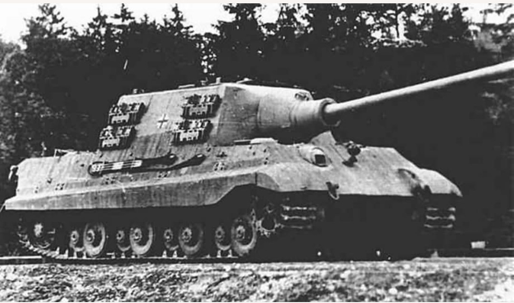
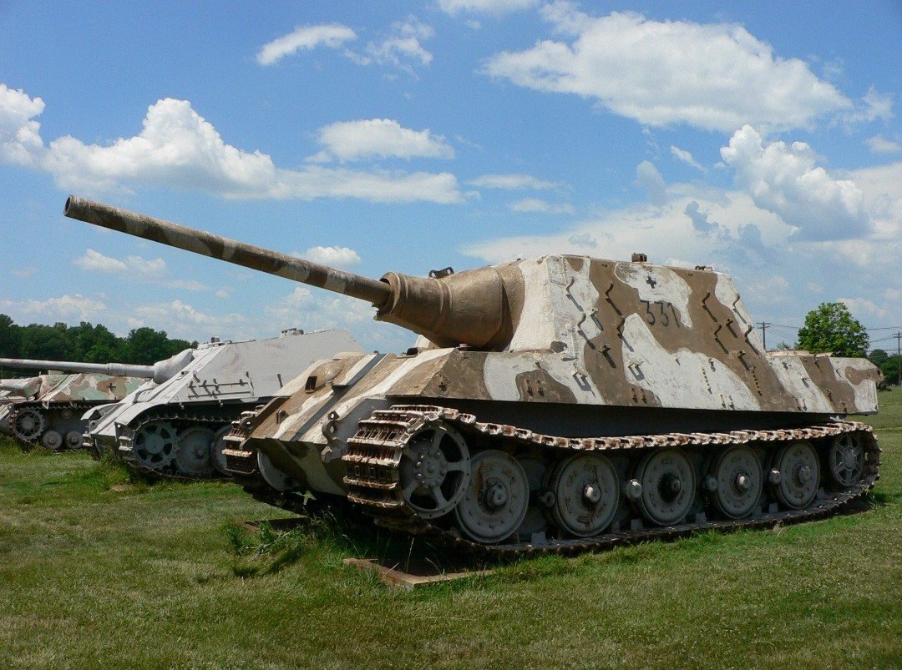

Le Jagdtiger est le chasseur de chars le plus lourd de la Seconde Guerre mondiale. Conçu pour détruire les blindés alliés à très longue distance, il combine un blindage frontal exceptionnel et un canon de 128 mm Pak 44 L/55 monté dans une casemate fixe. Deux versions existent : Porsche et Henschel, différenciées par leur train de roulement.

La version Porsche est la plus produite (environ 90 exemplaires). Elle se distingue par ses trois énormes galets de roulement par côté, hérités du Tiger I. Ce train de roulement massif donne au véhicule une silhouette immédiatement reconnaissable.
Utilité : destruction de blindés lourds à longue distance, défense de secteurs clés.

La version Henschel est extrêmement rare (environ 10 exemplaires). Elle utilise les roues plus petites et nombreuses du Tiger II, offrant une meilleure fiabilité mécanique. Visuellement, le train de roulement est plus “lisse”.
Utilité : même rôle que la version Porsche, mais avec une meilleure tenue mécanique.
Porsche : 3 énormes roues → silhouette massive → 90 exemplaires.
Henschel : roues Tiger II → silhouette plus lisse → 10 exemplaires.
Le canon, la casemate, le blindage et le rôle sont identiques. La différence principale est le train de roulement, seul élément permettant d’identifier la version sur une photo d’époque.